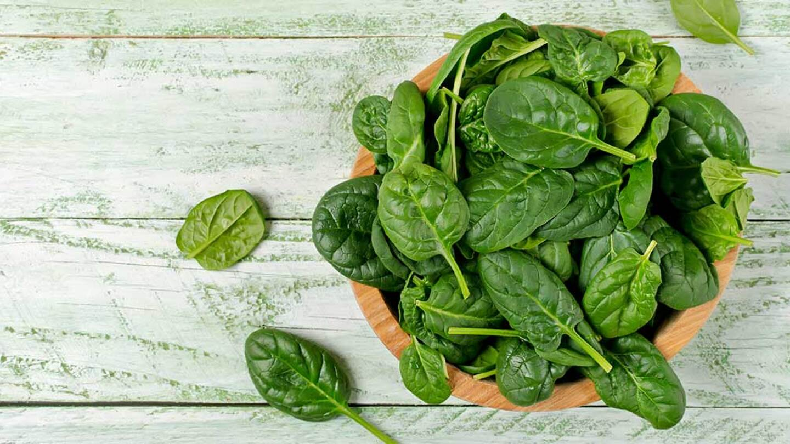
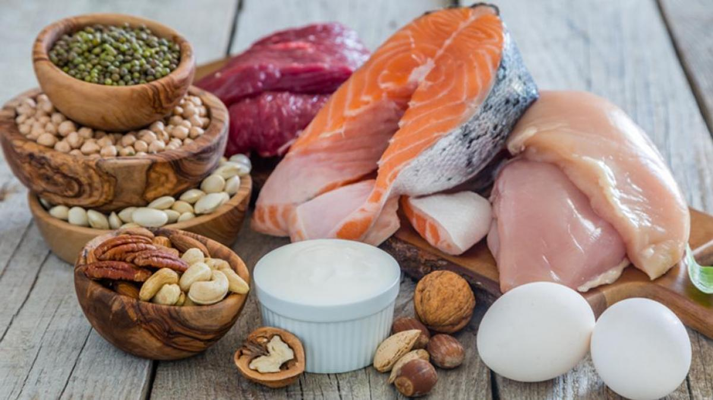
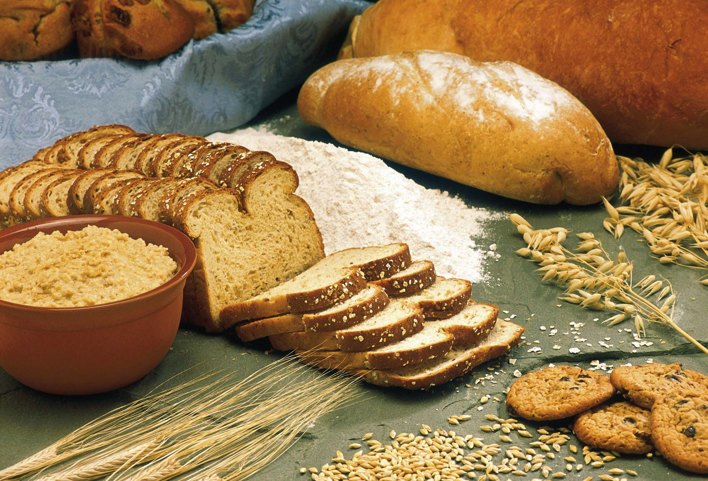

Los beneficios de una dieta rica en vegetales de hojas verdes

Las verduras de hojas verdes, como la espinaca, la col rizada y la lechuga romana, son una excelente fuente de vitaminas, minerales y fibra. Consumirlas regularmente puede ayudar a prevenir enfermedades crónicas como la diabetes y la enfermedad cardíaca, mejorar la digestión y aumentar los niveles de energía.Además, son bajas en calorías y pueden ayudar a controlar el peso. Son ricas en vitaminas y minerales: Los vegetales de hojas verdes son una excelente fuente de vitaminas y minerales, como el hierro, calcio, vitamina K, vitamina C y ácido fólico. Consumir regularmente estos nutrientes es importante para mantener el cuerpo saludable y prevenir enfermedades.
Ayudan a prevenir enfermedades crónicas: Los estudios han demostrado que una dieta rica en vegetales de hojas verdes puede reducir el riesgo de enfermedades crónicas como la diabetes, enfermedades cardíacas y algunos tipos de cáncer. Mejoran la digestión: Los vegetales de hojas verdes son ricos en fibra, lo que ayuda a mantener una buena digestión y previene el estreñimiento. Ayudan a controlar el peso: Los vegetales de hojas verdes son bajos en calorías y ricos en fibra, lo que ayuda a controlar el apetito y a mantener un peso saludable. Aumentan los niveles de energía: Los nutrientes en los vegetales de hojas verdes, como el hierro y la vitamina C, pueden aumentar los niveles de energía y reducir la fatiga.
Leer más
¿Cuánta proteína necesitas en tu dieta?

La cantidad de proteína que necesitas en tu dieta depende de factores como tu edad, peso y nivel de actividad física. Sin embargo, la mayoría de las personas necesitan alrededor de 0,8 gramos de proteína por kilogramo de peso corporal al día. Puedes obtener proteína de fuentes como carne, pescado, huevos, legumbres y nueces.
Entre 10 y 35 por ciento de las calorías deben ser proteicas. Por lo tanto, si usted necesita 2000 calorías, entre 200 y 700 calorías deben provenir de proteínas (50 a 175 gramos). La cantidad diaria recomendada para prevenir deficiencias en un adulto sedentario promedio es de 0,8 gramos por kilogramo de peso corporal. Ejemplo: una persona que pesa 75 kilogramos (165 libras) debe consumir 60 gramos de proteína diarios. “Al llegar a los 40 o 50 años, empieza la sarcopenia, o sea que uno comienza a perder masa muscular a medida que envejece. A fin de prevenir esta afección y mantener tanto la autonomía como la calidad de vida, la necesidad proteica aumenta a alrededor de 1 gramo por kilogramo de peso corporal”, explica Wempen. Quienes hacen ejercicio con regularidad también necesitan más proteína, alrededor de 1.1 a 1.5 gramos por kilogramo. Lo mismo ocurre con las personas que regularmente levantan pesas o entrenan para una carrera o una competencia ciclística y necesitan entre 1.2 y 1.7 gramos por kilogramo. Ingerir excesiva cantidad de proteína equivale a comer a diario más de 2 gramos por kilogramo de peso corporal.
Leer más
La importancia de beber suficiente agua
El agua es esencial para mantener el cuerpo hidratado y funcionando correctamente. Debes beber suficiente agua cada día para prevenir la deshidratación y ayudar a tu cuerpo a eliminar las toxinas. La cantidad de agua que necesitas depende de factores como tu edad, peso y nivel de actividad física, pero generalmente se recomienda beber al menos 8 vasos al día.Todos los seres vivos necesitan agua para sobrevivir, independientemente de que la saquen de una fuente, una nube de lluvia o un pequeño recipiente acoplado a una jaula de hámsters. Sin agua, tu cuerpo dejaría de funcionar como es debido. Más de la mitad del peso de tu cuerpo está formado por agua, y una persona no puede sobrevivir sin agua más de unos pocos días. ¿Por qué? Porque tu cuerpo necesita agua para poder llevar a cabo muchas de las funciones que desempeña. Por ejemplo, tu sangre, que contiene mucha agua, lleva oxígeno a todas las células de tu cuerpo. Sin oxígeno, todas esas células diminutas morirían y tu cuerpo dejaría de funcionar.
El agua también se encuentra en la linfa, un líquido que forma parte del sistema inmunitario, que nos ayuda a luchar contra las enfermedades. El agua ayuda a mantener la temperatura de tu cuerpo normal. Además necesitas agua para digerir los alimentos y para eliminar los productos de desecho. El agua es necesaria para los jugos digestivos, la orina y las heces. Y no dudes de que el agua es el principal componente de la transpiración, que también se llama sudor. Además de ser una parte importante de los fluidos corporales, el agua es necesaria para que cada una de las células de nuestro cuerpo funcione.
Leer más
La importancia de los hidratos de carbono para el organismo

Los hidratos de carbono, o carbohidratos, son claves para el funcionamiento del cuerpo, pues se encargan de proveerlo de energía. También se conocen como azúcares, ya que contienen almidón. Cuando consumimos hidratos de carbono el cuerpo los transforma en glucosa, que es el combustible final que emplea el organismo para realizar esfuerzos físicos, según explica Omega Pharma Spain. Además, al igual que ocurre con los hidratos, el cuerpo también utiliza grasas y proteínas para conseguir energía. Una persona común, que no realice especial esfuerzo físico como en el caso de los deportistas, necesita una media de entre 3 y 5g de hidratos de carbono por kg corporal. Por ello, aquellos que ronden los 70kg requieren entre 210 y 350g de HC diarios. Para personas cuya actividad es más intensa esta cifra aumenta.Los hidratos de carbono se pueden dividir en diferentes grupos según una serie de parámetros. Por ejemplo, existe una diferencia entre carbohidratos rápidos y carbohidratos lentos. Los primeros aportan energía instantánea y se absorben rápidamente en la sangre, como es el caso de la maltodextrina. Sin embargo, los HC lentos necesitan más tiempo para proporcionar energía al organismo, ya que se absorben más lentamente. Es muy importante reponerlos antes, durante y después de realizar ejercicio. El motivo es que el glucógeno muscular puede agotarse, provocando un bajón, según publica el mismo laboratorio. Existen diferentes formas de incorporarlos al organismo. Se puede hacer mediante los alimentos o las bebidas, mientras realizamos ejercicio físico. Pero no sólo es importante hacerlo durante la actividad, sino que tenemos que reponer los niveles de HC rápidamente al finalizar.
Leer más